WRITINGS
Odds
The longer we stand under this tree, the greater the chance we have of being crushed, I think to myself. Two sawyers race to cut a tree out of the trail as the valley funnels wind our direction. Back and forth, they pull on the saw, glancing nervously upwards every few seconds. A tree uphill threatens to fall.
The wind gusts and the tree circles, unsure if now is the moment it must finally surrender to the wind. Giant trees crash to the ground all around us, abandoning their pursuit of the sky with an echoing thud.
Out here it is easy to become consumed with what might kill you, and mortality in general for that matter, as the mind travels where it will. We talk about risk in training, and the likelihood versus consequence of certain things happening. We realize of course, that some things happen simply because they can.
We look for a safe place to take refuge from the falling trees, but this particular stretch of the woods seems to be indifferent to our safety.
My gaze wanders from the indecisive tree, to the river, not 30 yards downhill from me. I notice the contrast in depth amongst the water. The bends in the river accumulate stones, each one seemingly placed there. One imagines where these stones begin, and their journey down the mountain, and the certainty that they end up in the river one day. Each one of these stones a probability manifested into reality.
The trees much the same, occupying similar terrain in the mountains and vacating others. Yet there is the occasional outlier, one proud tree, boldly staking it’s claim on an impossibly steep hillside.
And then there's me, the observer of these probabilities, the most unlikely of the equation. And the days, each burdened with decision both large and small that dramatically dictate our future, leaving an infinitum of trails of what could have been, and one of what is. How many lotteries I won to end up in this moment. How lucky I am.
Another gust blows in, my tree sways, bracing for the next breath.